üåê Website Editing How-To#
GitHub#

What is GitHub?#
GitHub is where the website source code is hosted. GitHub was developed to make using Git more intuitive. Git (Not GitHub) is an effective version control software that allows a group to work on a project whilst dispersing the workload to multiple members. To accomplish this we will have each editing user create their own branch separate from the main branch. The main branch is where the live code sits for the website. Different branches allows individual users to make a copy of this main branch and work on their own aspects of the website/code without effecting others, if one user makes an update to main before another the other user can do a “pull” request to their branch and update it so it is that same as the main branch, if they need to see that other users code to accomplish there task. Otherwise once done with the update you want to make you can commit your changes to your branch and then “push” them. Then the owner can review your update branch and decide to “pull” your code to the main branch if it is good. The “pushing” and “pulling” can all be done in our coding software which we will go over later.
Setting up GitHub#
Navigate to github and sign up using your afacademy email. This will allow you to get GitHub pro for free which provides some nice AI assisted code benefits. If you want to activate GitHub pro go into your account and sign up for it. Follow all instructions to create your account, once done send Grant Stec a teams message and he will invite you to the BlueHorizon github organization.
Hint
To get GitHub Pro: education/students
Within the BlueHorizon github you should be able to see the different repositories (folders for different projects) the one titled “BlueHorizon-InfoPage” is the website repo (repository). You should see something like this. You can also find it here
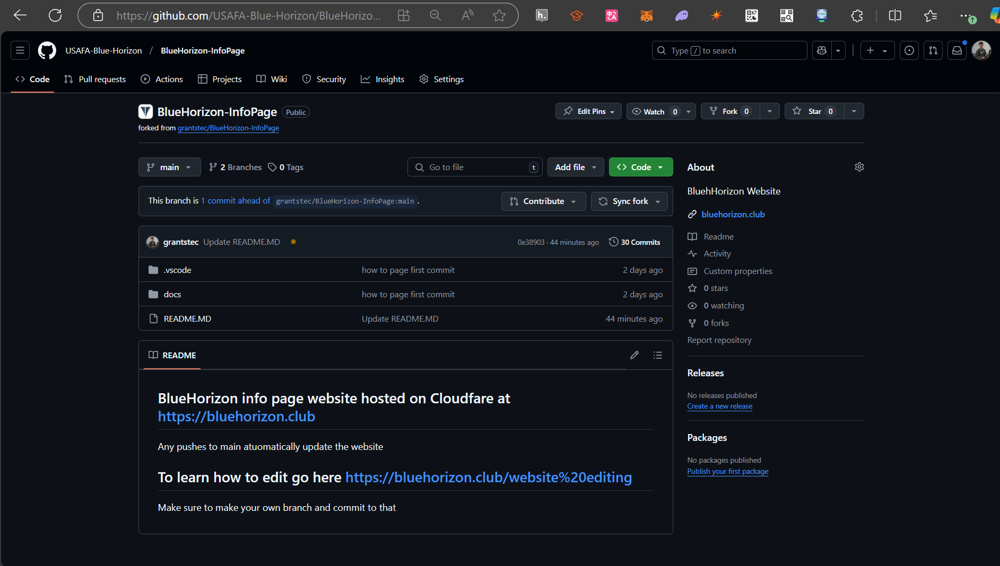{kind=link}
Creating your own branch#
Going back to what we covered before, creating your own branch gives you a workspace where you can edit files and push to that branch without needing perfectly functioning code that would crash the whole website.
navigate to the tab called “Branches” as seen in the picture below

You should now see the names of the different existing Branches on this repository. We will follow a common naming convention as you can see, simply name your branch based on your name. To make your branch hit the bright green “New Branch” button, name it, keep all the other settings that same and hit “Create New Branch”. Now you should see your branch listed on the Branches page.
VSCode#
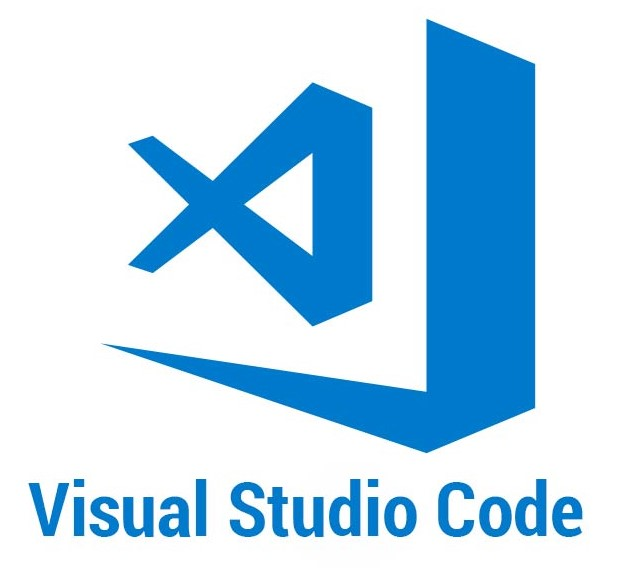{kind=link}
What is VSCode?#
VS Code (VSC) is a coding IDE that allows you to write in multiple coding language with a very well designed UI and good integration with Git.
You can download from the microsoft app store or online here Be sure to download the x64 bit Windows System Installer.
Setting up VSCode#
Accept the default options for all of the VS Code install prompts. Click the Finish button to complete the install and launch VS Code. Accept any defaults that are presented during your first launch of VSC. You should see an image like the one below once complete.
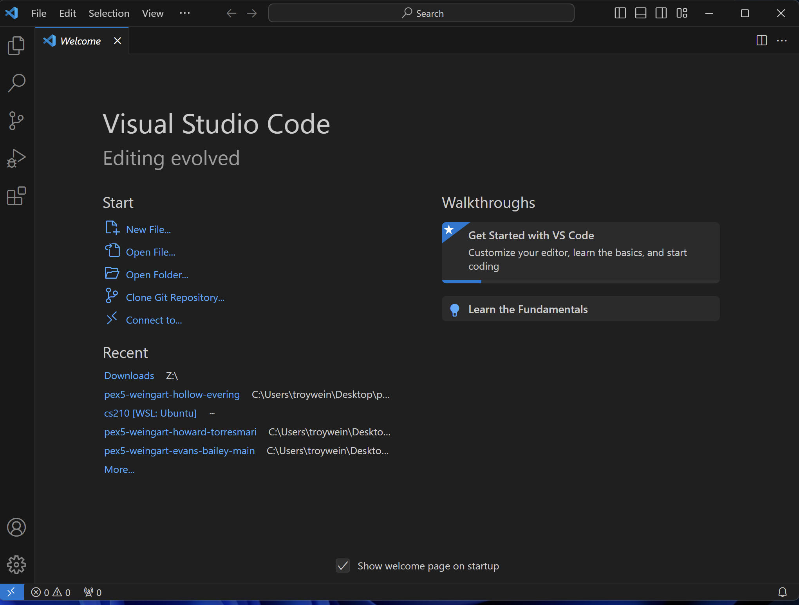{kind=link}
Extensions#
You will now install extensions to assist the development process. Click the extensions button on the side, it looks like a teri block. Search for Code Spell Checker and install the one by Street Side Software as seen in the picture below.
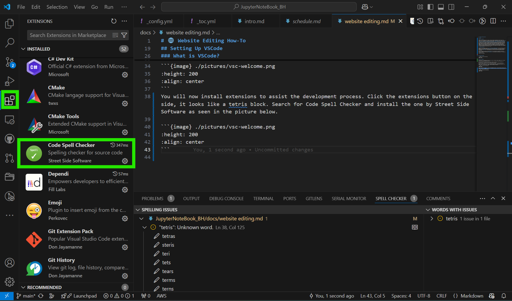{kind=link}
If you had signed up for github and gotten github pro it would be useful now to also download the GitHub Copilot and GitHub Copilot Chat extension along with the GitHub Pull Requests extension. All of the website files are markdown based so you should also get the Markdown All in One extension by Yu Zhang and Markdown Preview Enhanced by Yiyi Wang to quickly see the markdown pages in VSC.
If any extensions ask for setup or gives any setup instructions after installation don’t bother just continue.
Note
If you find any cool extensions on your own please share ü§ó
GitHub Sign In#
Now we will sign into GitHub on VScode so we can easy push pull and commit to our respective branches on GitHub. To Login click the account looking icon in the bottom

There should be a connect to GitHub button or something similar. Click and that and you should be re directed to your browser to connect your github account to VSCode.
Create Folder#
Now create a folder to have the Website files on your computer, this can be made anywhere, Onedrive folders etc. Now once that folder is created go back to VSCode if you have a current folder open go to file and new windows or simple click open folder on the main page and navigate to open the folder you just made.
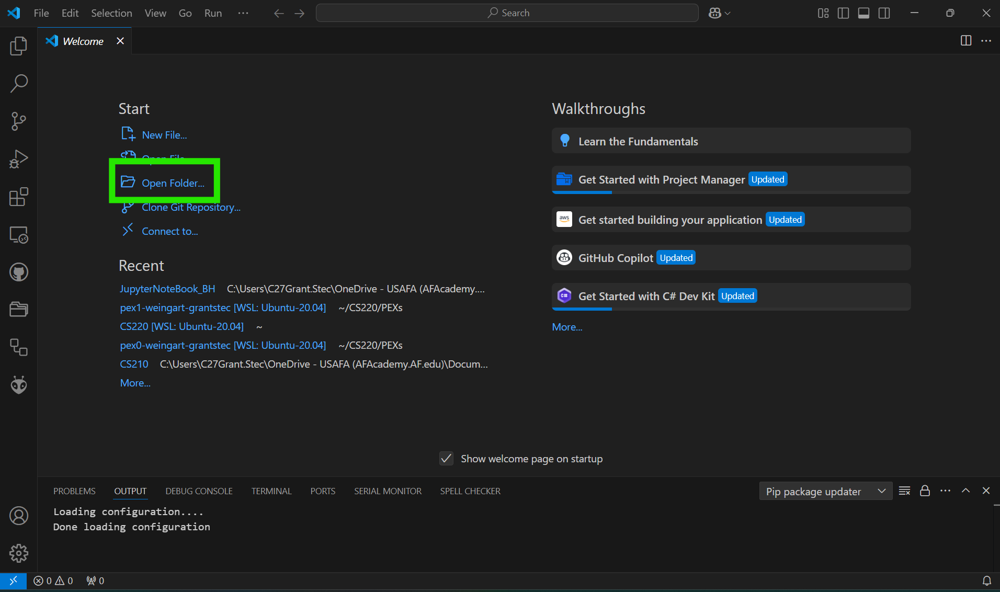{kind=link}
Terminal#
Now on the bottom of VSCode if there is not a terminal window similar to the one in the bottom of the picture then you would want to move your mouse to the bottom of the window as seen in the next picture and once your courser turns into the double vertical arrows click and drag up this will open the terminal or you can use the hotkey of Ctrl+` (Not apostrophe, button below esc usually).
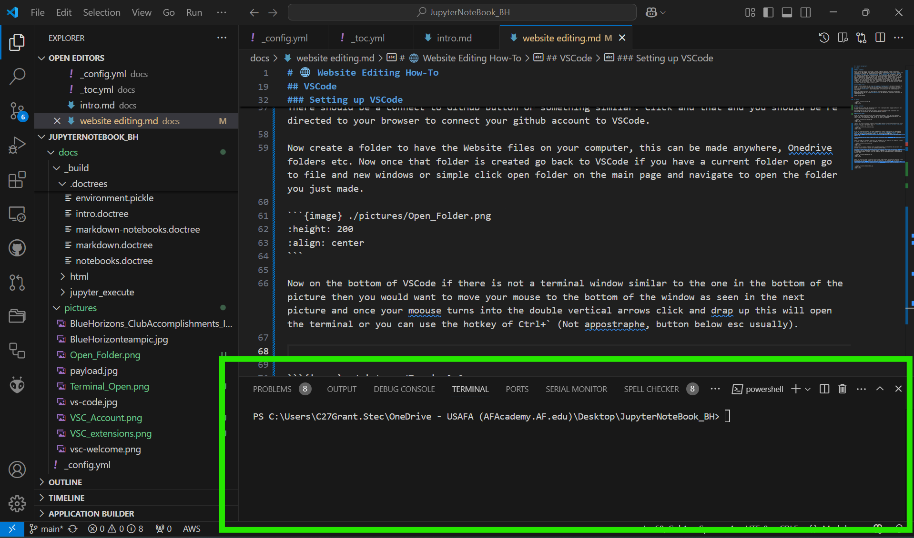 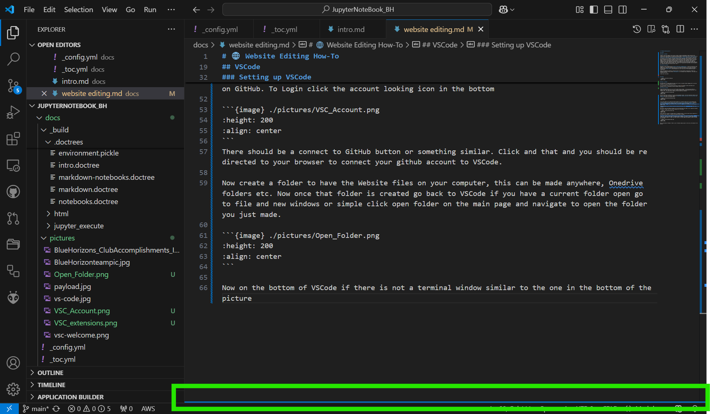{kind=link}
{kind=link}
Make sure the command line in the terminal windows looks like the folder location you have created and has the same name at the end of the printed line in terminal. Navigate back to the VSC terminal with your folder in the directory and copy this command git clone https://github.com/grantstec/BlueHorizon-InfoPage.git and hit enter.
Once the git clone has finished you should now see your folder populated with all the same files from github. Now you can begin editing and or adding the files. Familiarize yourself with the file structure snd files like intro.md, _config.yml and _toc.yml to learn more about how this file structure works and some niche formatting as seen in intro.md you can visit Built with Jupyter Book
Committing and Pushing#
Branch Selection#
Warning
Do not select “main” branch at any time!
Once you are ready to commit and push a new change there are a few things we must make sure as to not destroy the live functioning website running from GitHub. Navigate to the source control tab on the left hand bar above the extensions and above the debugger as seen in the photo.
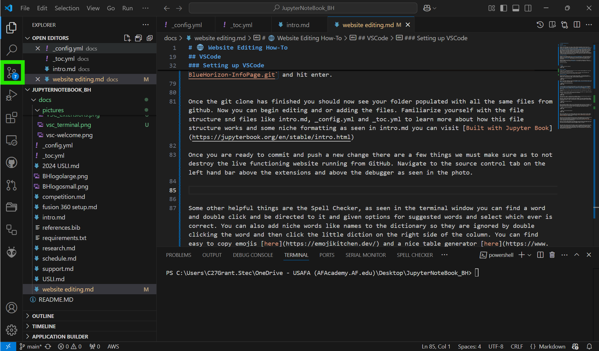{kind=link}
You will want to get very familiar with this tab as this is where our version control will be based from and allows us to keep a functioning website running whilst having multiple people edit separate files. If you have made any changes you will see the Commit button in blue. We will worry about this later. Most importantly we have to go back to some things we discussed in the beginning of this page and make sure we are pushing to the branch you made. Click on this.
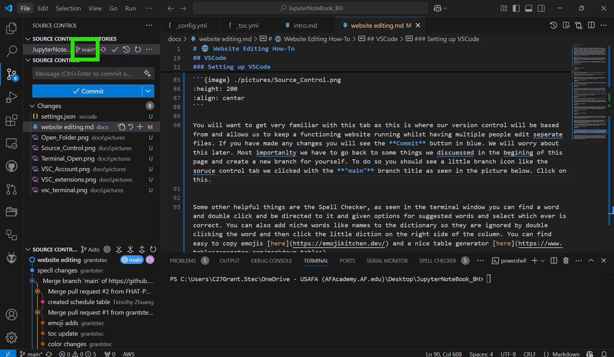{kind=link}
This will open up a window at the top
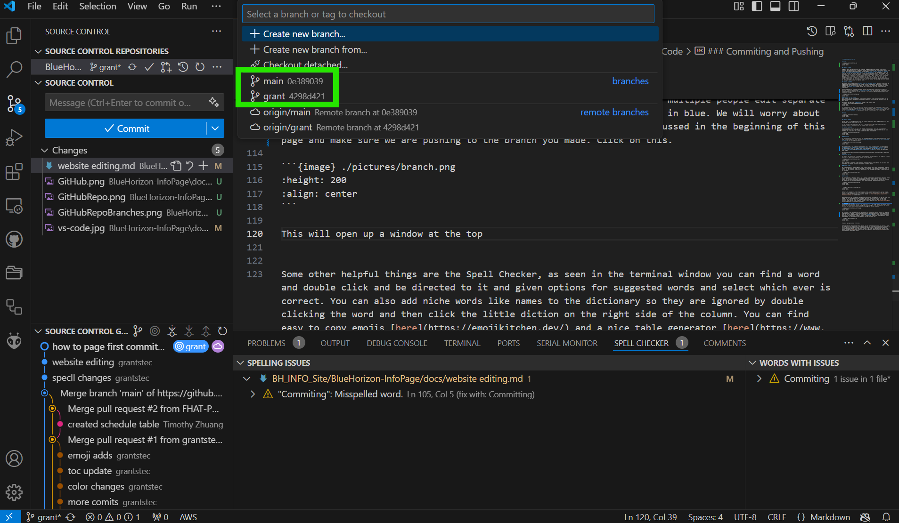{kind=link}
Select your corresponding branch, do the same process of clicking on the branch icon on the bottom Source control tab and selecting you branch.
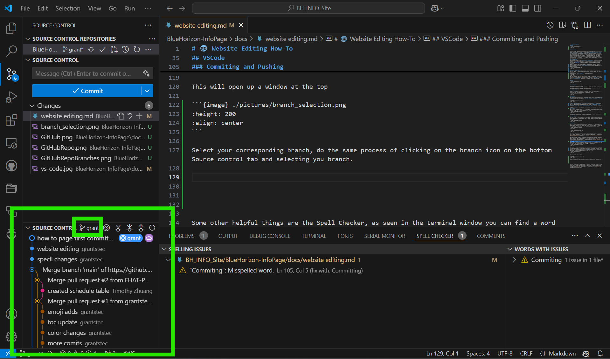{kind=link}
Now you should be all set to begin editing the files and once you have made good progress on some edits and or are done for the day it is always a good thing to push to GitHub.
Committing#
Once you have made edits go back to the Source Control Tab (Branch looking thing), often below the magnifying glass on the left side bar. In this tab the “Commit” button should now be blue with the files you have changes listed below in the “Changes in the Message block type a simple message that relates to what you changed. For example if I added an image called rocket I could say “added rocket image”.
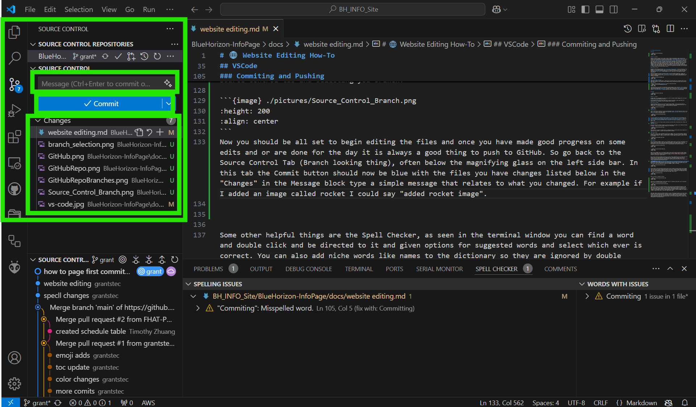{kind=link}
Sync Changes#
After you hit commit the button should now change to say “Sync Change” Click this button to sync the changes you made. This just double checks that your files are up to date with what you just pushed. If a windows shows up asking “This action will push and pull commits from and to (Your branch)”. Just hit Okay.
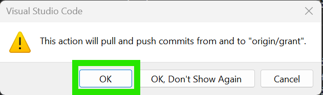{kind=link}
You will want to repeat this process whenever you make any changes.
Note
Check your branch has been committed by going back to the repository USAFA-Blue-Horizon/BlueHorizon-InfoPage. In your branch’s row there should be a column titled “Updated” confirm the timestamp looks reasonable based on when you last committed and synced.
Changing Main Page#
Once you commit ahead of main branch and push to your own branch I will get a message that the branch has been changed and I can move it to main if you are ready for your page to be on home page. Message Grant Stec on Teams.
Quick Tips#
Spell Checker Extension#
As you may recall we installed a Spell Checker extension. Whenever you are editing a Markdown file and come across a misspelling a word it will be underlined with a blue squiggly. You can correct these in two ways. The slow way is right click on the word and then go to “Spelling Suggestions”, a tab on the top should open with suggested words. The quick way is open the terminal at the bottom and go to the tab called “SPELL CHECKER” find a word and double click and you will be directed to it and given options for suggested words and select which ever is correct. You can also add niche words like names to the dictionary so they are ignored by double clicking the word and then click the little diction on the right side of the column.
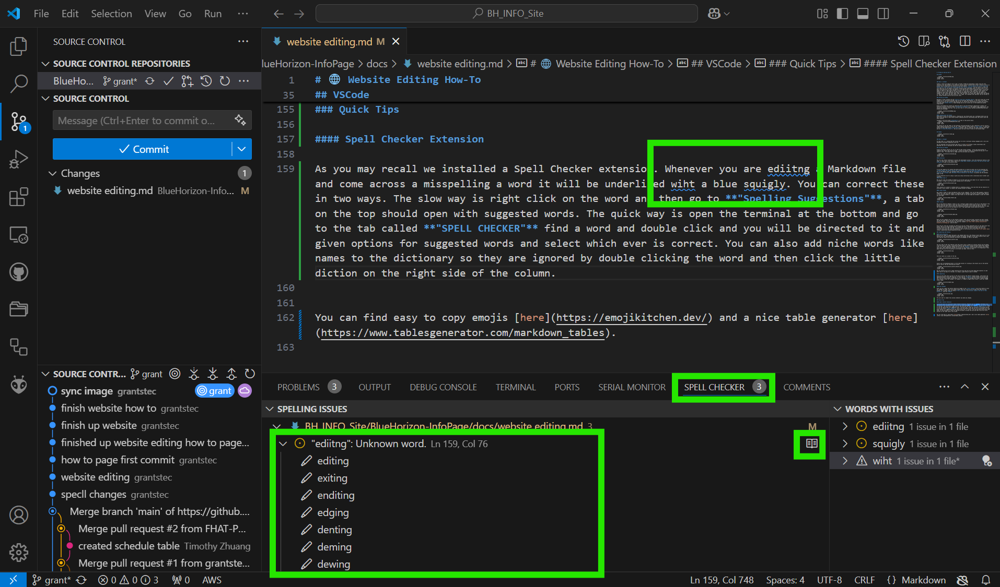{kind=link}
Markdown Page Viewier#
Warning
You must have Markdown All in One Extension installed
Use “Ctrl” + “Shift” + “V” to get another tab to open in VS Code that shows a preview of the Markdown page.
Emojis#
You can find easy to copy emojis here
Tables#
Table generator here.
Example Repositories/Websites#
Use these examples website to find neat features you may like/want to add and then find them in the code of the repository. You can also learn more about jupyterbook websites as whole from the main documentation website: https://jupyterbook.org/en/stable/intro.html.
ECE 281 Website#
Website: https://usafa-ece.github.io/ece281-book/intro.html GitHub: usafa-ece/ece281-book
ECE 387 Website#
Website: https://stanbaek.github.io/ece387/intro.html GitHub: stanbaek/ece387